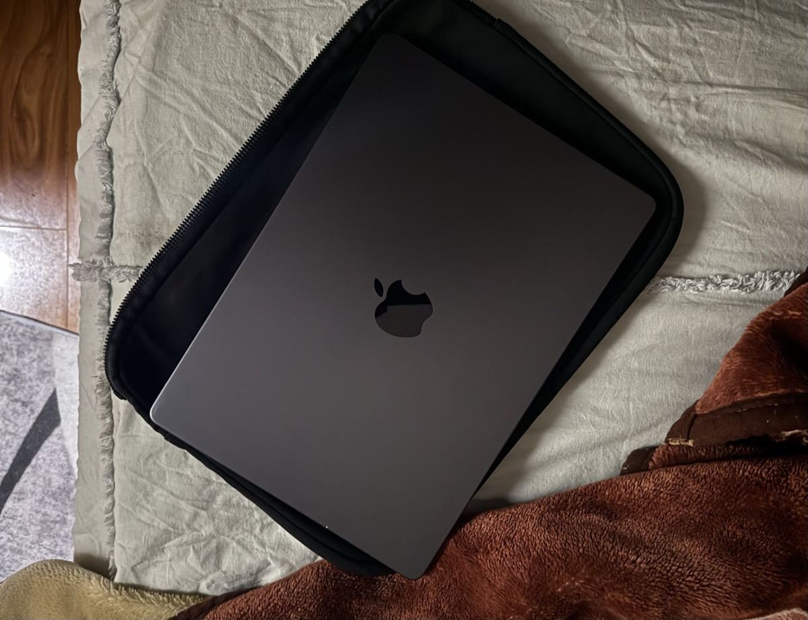
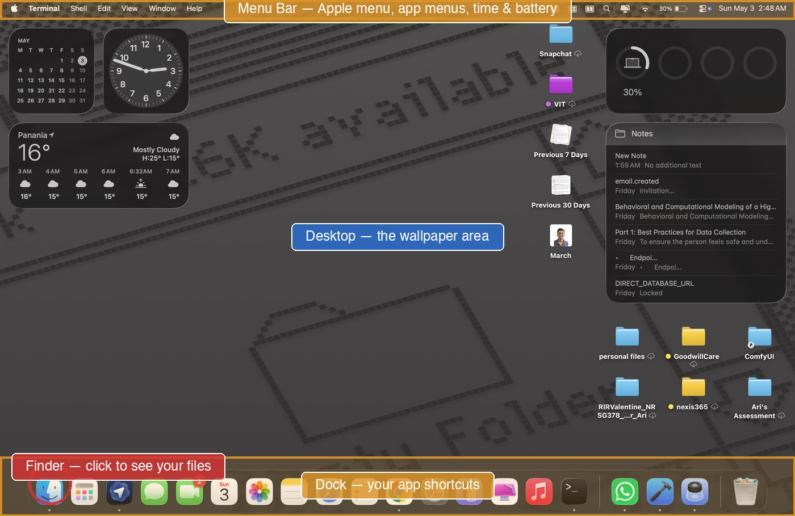
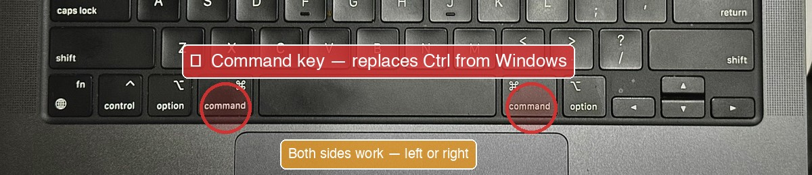
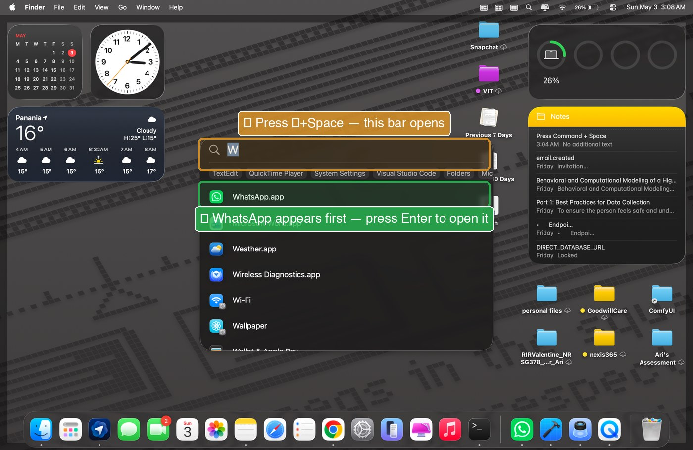

Hello, Abbu. Welcome to your Mac.
You'll learn how a Mac is the same as Windows, and the few places where it's different. Once you know those few places, the rest is easy.
Everything you knew on Windows is still here. The names changed. Some buttons moved. The keyboard works a little differently. That's it.
I made this guide for you, Abbu. Read at your own pace. Re-read anything you forget. There's no test, no time limit, I promise.

Same things. New names.
After this slide, you'll be able to translate the Windows words you know into the Mac words you'll see.
Below: the eight terms you'll meet most often. Don't memorize. Just read, recognize, and come back when you forget.
| You knew it as (Windows) | → | It's now called (Mac) |
|---|---|---|
| File Explorer | → | Finder |
| Taskbar | → | Dock |
| Start Menu / Search | → | Spotlight |
| Recycle Bin | → | Trash |
| Settings / Control Panel | → | System Settings |
| Notepad | → | TextEdit |
| Task Manager | → | Force Quit (⌘+⌥+Esc) |
| Ctrl key | → | ⌘ Command key |
The four corners of your Mac.
Anywhere on your Mac, you can always find these four areas. Once you know them, you'll never feel lost.
-
Menu Bar, top of the screen
The thin black strip across the top. Shows the menus for whatever app you're using right now (File, Edit, View, etc.) and your Wi-Fi, battery, time on the right.
-
Dock, bottom of the screen
The strip of icons. Click an icon to open that app. The Dock is where you keep your favourites. WhatsApp lives here. Finder lives here. Trash lives at the very right.
-
Desktop, the empty area in the middle
The wallpaper you see when no apps are open. You can drop files here, but try to keep it tidy. Files dropped on the Desktop don't disappear — they're in a folder called Desktop.
-
Finder, the smiley face icon
Click the half-blue, half-grey smiley in the Dock. This is where you look at all your files. It's always running.

⌘ replaces Ctrl. That's it.
After this slide, every Windows shortcut you knew still works, just press ⌘ instead of Ctrl.
On Windows, you held Ctrl for shortcuts. On Mac, you hold ⌘ (the Command key) instead. The Command key is the one with the cloverleaf symbol, right next to the spacebar.
| What you want to do | Windows (was) | Mac (now) |
|---|---|---|
| Copy | Ctrl+C | ⌘+C |
| Paste | Ctrl+V | ⌘+V |
| Save | Ctrl+S | ⌘+S |
| Undo (the panic key) | Ctrl+Z | ⌘+Z |
| Find on this page | Ctrl+F | ⌘+F |

When in doubt, press ⌘+Space.
After this slide, you'll never feel lost on your Mac. Spotlight finds anything, apps, files, settings, even quick maths.
Press ⌘+Space anywhere, anytime. A search bar opens in the middle of the screen. Type what you want. Press Enter. Done.
What you can ask Spotlight
-
Open an app: type WhatsApp, hit Enter. No need to find the icon in the Dock or Applications folder.
-
Find a file: type part of the filename. Even if you don't know where you saved it, Spotlight finds it.
-
Open a setting: type Wi-Fi, Bluetooth, Sound, Display.
-
Quick maths: type
250 * 12or4900 / 7. The answer appears immediately. -
Convert units: type
5 km in milesor100 USD in BDT.
